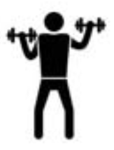

Wekelijkse Tip
Probeer deze week een dagelijkse wandeling van 30 minuten te maken. Het helpt je om fit te blijven en je geest scherp te houden!
Alle Oefeningen
Oefening 1: Stoel Yoga
Houd met beide handen de zijkanten van de zitting vast. Til op een inademing je rechterknie zo hoog mogelijk op. Houd vijf tellen vast terwijl je rustig doorademt en laat hem op een uitademing weer naar de vloer komen. Wissel rechts met links af en herhaal deze oefening nog drie keer met beide benen.
Oefening 2: Balansoefeningen
Sta rechtop met je voeten op schouderbreedte. Til je rechterbeen op en houd het een paar seconden vast. Herhaal dit met je linkerbeen. Dit helpt bij het verbeteren van je balans.
Houd een stoel vast voor extra ondersteuning.
Oefening 3: Krachttraining met lichte gewichten
Gebruik lichte gewichten om je arm- en schouderspieren te versterken. Begin met 1-2 kg en verhoog geleidelijk.
Oefening 4: Rek- en strekoefeningen
Rek je armen en benen voorzichtig uit. Dit helpt om je flexibiliteit te verbeteren en blessures te voorkomen.